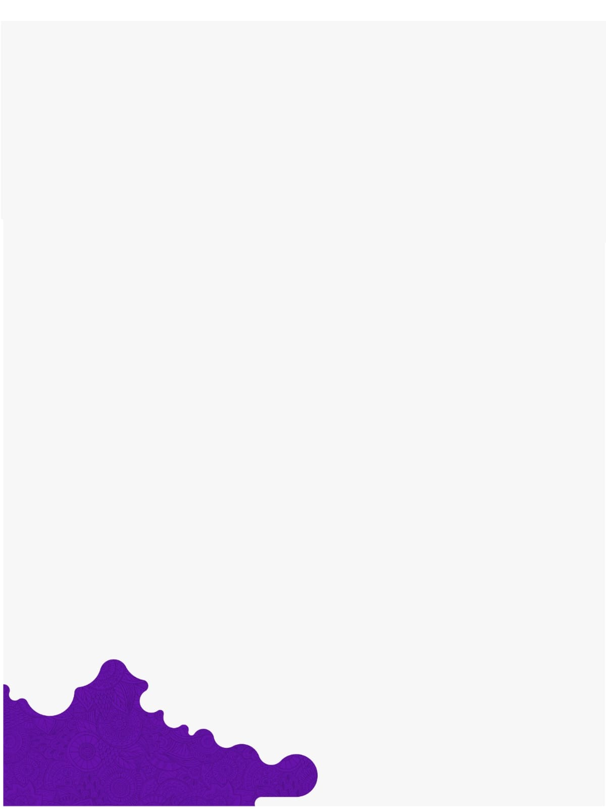

Sejarah UNPRI
Ringkasan Singkat Universitas Prima Indonesia (UNPRI)
Sejak 13 Oktober 2005, UNPRI tumbuh sebagai universitas multikultural, inklusif, dan progresif, terus memperluas program, fasilitas, serta ekosistem pendidikan-kesehatan untuk mendukung pembelajaran, riset, dan kolaborasi.
Era 1, 'Awal Mula'
2001
Akademi kecil di Medan yang menjadi cikal-bakal universitas multidisiplin.
- Didirikan sebagai Akademi Keperawatan & Akademi Kebidanan Prima, Kota Medan.
- 2002 — naik jenjang menjadi STIKES Prima Husada Medan.
- 13 Okt 2005 — resmi menjadi UNPRI lewat SK Mendiknas No. 151/D/O/2005.
2001–2005,
"Titik Berangkat"
Kampus boleh sederhana, tapi tekad memperbaiki pendidikan dan layanan kesehatan di Sumatera Utara sudah tertanam sejak hari pertama.
Prof. Dr. dr. I Nyoman Ehrich Lister, M.Kes.
Pendiri Universitas Prima Indonesia
Era 2
PT
Akr.
Akreditasi Institusi
Terakreditasi A oleh BAN-PT dan Perpustakaan Nasional RI — menandai kualitas kelembagaan yang konsisten meningkat.
Fakultas & Program Studi
Berkembang menjadi 9 fakultas dengan 57 program studi, termasuk pendidikan kedokteran lengkap sarjana–doktoral.
Jaringan Kerja Sama Tridharma
127
Internasional
458
Nasional
502
Lokal
2005–20
2005–2020, "Ekspansi & Akreditasi"
Dua dekade ekspansi: kampus baru, akreditasi institusi meningkat, dan jaringan kerja sama tridharma meluas ke tingkat internasional.
Pimpinan
Chrismis N. Ginting
Rektor
I N. E. Lister
Pendiri
Pencapaian
2020 · Peringkat 10 nasional serapan dana riset & peringkat 2 publikasi ilmiah wilayah I (SINTA).
2022 · Lembaga Sertifikasi Profesi (LSP) resmi berlisensi BNSP.
2020–kini
2020–Sekarang, "Inovasi Global"
Kampus utama 23 lantai berdiri di Jl. Sampul, Medan, lengkap dengan tiga rumah sakit pendidikan sendiri.
- Kampus 23 lantai & tiga rumah sakit pendidikan terintegrasi.
- RS Royal Prima, RS Gigi & Mulut Prima, RS Mata Primavision.
- 2021 kerja sama IEEE Indonesia · 2024 akreditasi UNGGUL BAN-PT.
- 2025 — buka Prodi Spesialis Mata, satu-satunya di PTS Indonesia.
Era 3
Kehidupan Kampus & Wisuda
Fasilitas Lab Modern
Laboratorium terintegrasi dengan rumah sakit pendidikan — peralatan klinis dan riset generasi terbaru.
2021
MATA
Mitra Global Terbaru
127 mitra internasional, termasuk Pusan National University, Universiti Malaya, dan I-Shou University Taiwan.